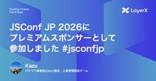

LayerX エンジニアブログ
https://tech.layerx.co.jp/
LayerX の エンジニアブログです。
フィード

JSConf JP 2026にプレミアムスポンサーとして参加しました #jsconfjp 1
1
LayerX エンジニアブログ
みなさん、こんにちは！今年の4月に新卒として入社したkazuです。ここ1週間で一気に冷え込んできましたがみなさん体調いかがでしょうか？自分は短かった秋が恋しいです。 LayerXは、今年もJSConf JPにプレミアムスポンサーとして協賛しました。 JSConf JP 2025に引き続き、3回目の協賛となりました。JavaScriptコミュニティへの感謝と貢献を形にできる機会として非常に楽しみにしていました。 ということで今回は、そんな「JSConf JP 2026」の参加レポートをお届けしていこうと思います。 弊社登壇者と登壇内容 弊社からはスポンサーセッションとして2人、応募枠として2人の…
4日前

内製 Background Agent "haro" を "haro" の中で開発しターミナルを捨てる
LayerX エンジニアブログ
LayerX では haro という Background Coding Agent を内製しています。僕はこの haro の開発に関わっていて、「haro 自身の開発を haro の中でできるようにする」ことに取り組んできました。チームではこれを haro in haro と呼んでいます。 最初に試した構成は捨てることになり、今は vCluster と Envoy と Telepresence を組み合わせた構成に落ち着いています。そこに至るまでの流れをお話しします。 haro とは haro は LayerX のバクラク事業部で内製している Background Coding Agent …
9日前
PR が1年で5倍になった monorepo で、フロントエンドの基盤をつくる — バクラク Frontend Enabling を募集しています
LayerX エンジニアブログ
はじめに バクラク事業部のエンジニアの ypresto です。 今日はバクラクで募集している Frontend Enabling というポジションについて紹介させてください！ バクラクでは原則としてJavaScriptとGoのソースコードをmonorepoで管理しています。JavaScript のパッケージも今120を超えています！ リポジトリ全体でマージされた PR は、1年前の月 1000 件弱から、今は月 5000 件を超えました。 マージされたPR数 monorepoのパッケージ数 そのような中で、巨大なmonorepoの信頼性を担保しスケールを可能にするべく、 Frontend En…
9日前
内製 Coding Agent "haro" を使った全サービス横断レッドチーミング基盤
LayerX エンジニアブログ
自分たちの LLM 機能を自分たちで攻撃して弱いところを探す「レッドチーミング」を、バクラクの全サービスに向けて、社内の Background Coding Agent「haro」の上で動く Claude にまかせる仕組みを作りました。今回はその仕組みをお話しします。
10日前
Snowflake Parquet Direct の仕様をドキュメントと実測から理解する
LayerX エンジニアブログ
こんにちは。コーポレートエンジニアリング室 データグループの@civitaspoです。そろそろクリスマスに向けて、子どもたちにAmbientな要件ヒアリングが求められる時期になってきましたね。今年は「サンタへの手紙」という確定仕様書を、問題なく手に入れられるといいのですが... はじめに Snowflake の Parquet Direct 機能が Public Preview で発表されましたね！僕としては待望していた機能だったので、Xで興奮のつぶやきを発してしまったくらいです。 これで過去の資産も大きなコストかけずにSnowflakeから参照できるようになる！ADD_FILES_COPYだ…
10日前
内製 Background Agent “haro”に アラート対応を任せたら 回すたびに賢くなっていった
LayerX エンジニアブログ
LayerXに新卒入社したエンジニアが社内の Background Coding Agent「haro」を用いてアラート対応を行った話
11日前
内製 Coding Agent "haro" と社内 GPU で、探索的テスト AI Agent をぶん回している
LayerX エンジニアブログ
探索的テストを、社内の Background Coding Agent「haro」と、社内 GPU で動かしている Qwen3.8-27B にまかせています。今回はその仕組みと、約 10 時間で 47 本のシナリオを回して分かったこと、そして「全部 Claude で回したらいくらかかるのか」をお話しします。
13日前
YAPC::Tokyo 2026 にスポンサー＆4名が登壇します！
LayerX エンジニアブログ
こんにちは、LayerX Tech RP の太田です。 株式会社LayerXは、2026年11月27日（金）から29日（日）に東京ビッグサイトで開催される「YAPC::Tokyo 2026」にブロンズスポンサーとして協賛します！ 今年のテーマは「パッチワーク」です。開催概要は、YAPC::Tokyo 2026公式サイトをご覧ください。 yapcjapan.org LayerX が YAPC に協賛する理由 LayerX は「すべての経済活動を、デジタル化する。」というミッションの実現に向け、さまざまなプロダクトを開発しています。 YAPC をはじめとするオープンな技術コミュニティから多くを学ん…
15日前
QA チームで Jev 勉強会を開いたら、AI に任せる範囲と人に残したい範囲が見えてきた
LayerX エンジニアブログ
QA エンジニア16人で Jev の勉強会を開き、78枚の付箋から「Jev に任せる場所」と「人に残す場所」を整理しました。判断特化型 AI を QA に活かすための、2つの問いを紹介します。
16日前
業務ごとにデータ構造が変わるプラットフォームで、AIエージェントにテーブル設計を任せる
LayerX エンジニアブログ
はじめに こんにちは。LayerXのAi Workforce事業部でソフトウェアエンジニアをしているsunaです。 私たちが開発しているAi Workforceというプロダクトでは、エンタープライズ向けのAIエージェントを提供しています。請求書の処理、契約書の確認、案件の管理といった業務を担うエージェントを、FDE（Forward Deployed Engineer）が伴走する形で作り上げて動かします。特定の業種や業務に限定せず、経理・法務・営業など、部門を横断してさまざまな業務に対応する柔軟なプラットフォームです。 エージェントは処理の過程で、書類から抜き出した値や取引先の情報といったデータ…
24日前
「見た目はいいけど、伝わらない」AIスライドを改善する試行錯誤
LayerX エンジニアブログ
はじめまして、LayerX Ai Workforce事業部 FDEの近藤(@Konken)です。 いきなりですが、昨今、スライドの作成をAIに任せる機会が増えてきたのは皆さんも感じているところかと思います。特に Opus 5.5やgpt 6をはじめとするフロンティアモデルくらいからぐっとレベルが上がったように感じます。 私は前職が営業に近い仕事をしていたこともありスライドを作成する機会が多かったのですが、大変に苦手な作業でした。これがAIに任せられるようになってとても助かっています。 LayerXでもスライド作成のための仕組みが社内に整っており、社内向け・社外向けを問わず、多くの資料作成でAI…
1ヶ月前
内製 Background Coding Agent “haro” で拓く未来の開発体験
LayerX エンジニアブログ
LayerX バクラク事業部 Platform Engineering 部 Staff Software Engineer の izumin5210 です。 3D アクションゲームを始めたはずが工場自動化要素が入っていたせいで、昼夜を問わず何らかの生産性について考えています。 バクラク事業部 Platform Engineering 部では、社内のプロダクト開発を支援する、クラウド上で動作する Coding Agent “haro” を開発しています。 Ramp 社の Inspect などと同じく Web UI や Slack 上から呼び出すことができ、バクラクを開発するために必要なものが揃っ…
1ヶ月前
AI Writes, Reviews, and Tests My Code. My Job Now Is to Taste It
LayerX エンジニアブログ
I've pretty much stopped reading the code AI writes for me. On a typical day, about 13 PRs (pull requests) go up. If I read every line of every one, I'd be the bottleneck. So I stopped. My team still reviews it, and QA still tests it after that. Then one day, six AI agents were reviewing one of my c…
1ヶ月前
AI が書き、レビューし、QA する開発で、私は「監督」の役割を考え始めた
LayerX エンジニアブログ
AI が書いたコードを、最近めっきり読まなくなった。 1 日に 13 本くらい PR（Pull Request）が出る昨今の私の開発プロセスでは、全部コードを読んでいたら人間の工程で詰まってしまう。だから、チームのレビューとその後の QA プロセスは残したまま、私はコードを読むのをやめた。 コードを読まなくなってしばらく経ったころ、AI が 6 体がかりでコードをレビューしていた。指摘はどれももっともらしくて、エラーも出ていない。 ふと気になって通知に出てきたファイルを見た。 あれ、こんな修正、お願いしてたっけ……？ AI が読んでいたのは、私の変更が 1 行も入っていないコードだった。 コー…
1ヶ月前
ヘルプデスク管理を自前の仕組みからバクラクヘルプデスクに移行した話
LayerX エンジニアブログ
LayerX Fintech事業部から、三井物産デジタル・アセットマネジメント（以下、MDM）に出向している hi-se です。 私が所属しているMDMのコーポレートシステム部では、社内のヘルプデスク対応に、日々それなりの時間を使っています。ヘルプデスク対応は、社員が業務を滞りなく進められるかどうかに直結する重要な業務の1つです。 ただ、他にもやるべきことはたくさんあるので、ヘルプデスクに割く時間は極力減らしていきたい思いがあります。 ヘルプデスクはいつどれくらい来るか予測できないですし、緊急性の高い依頼が来ることもあります。 私たちのチームでは通常3営業日を対応の目安としていますが、急ぎでな…
1ヶ月前
ソフトウェアサプライチェーン攻撃演習から学ぶ、インシデント対応に必要な5つの視点
LayerX エンジニアブログ
こんにちは、LayerX Fintech事業部から三井物産デジタル・アセットマネジメント（以下、MDM）に出向しているs.masです。 皆さん、AI を活用されていますか。非常に便利な反面、昨今は AI によってセキュリティの前提も変化してきていると認識しています。 たとえば 2026年5月には、npm で広く使われているライブラリ群の正規バージョンが改ざんされ、インストールしただけで開発者の認証情報が盗まれるワーム型の攻撃が公開されました。 この検体は、盗んだ認証情報で別のパッケージを次々と再公開して広がるだけでなく、Claude Code や VS Code の設定ファイルに自分自身を書き…
2ヶ月前
LLM Wikiの組織運用に向けて ── 陳腐化を防ぐ更新の仕組み
LayerX エンジニアブログ
はじめに LayerX バクラク事業部 Platform Engineering 部 Enabling グループの shibutani です。 「この機能、実際にはどう動くんだっけ？」という問いは、QAがテストの期待結果を書くときにも、CSがお客様からの問い合わせに答えるときにも、日常的に発生します。答えを探す先はNotionの設計仕様書、Zendeskのヘルプ記事、GitHubのコードの3つに分かれており、しかもこれらの記述はしばしば食い違います。 そこで、プロダクト仕様に関するコンテキストのSingle Source of Truthを作るために、LLM Wikiを構築しました。3つの出典…
2ヶ月前
cognee CEOの講演で聞いたナレッジグラフの話 ── エージェントの記憶は「増える」から「良くなる」へ
LayerX エンジニアブログ
こんにちは、LayerX の Ai Workforce事業部でFDE（Forward Deployed Engineer）をやっているakioです！ 少し前ではあるのですが、2026年7月にサンフランシスコでcogneeというナレッジグラフ（以下KG）関連のサービスを提供している会社のCEOのお話を聞く機会がありました。cogneeは、AIエージェント向けの「記憶」をオープンソースで提供している会社で、2026年2月にOpenAIの共同創業者らが率いるPebblebedから750万ドルのシード調達を発表しています。Mem0やZepと並んで「エージェントのメモリ層」をめぐる会社の一つ、という位置…
2ヶ月前
JaSST'26 Niigata 参加レポート：基調講演・事例発表でLayerXメンバー4名がお話ししました #JaSST
LayerX エンジニアブログ
こんにちは！LayerX バクラク事業部 QAマネージャーの松山（matsu）です。 2026年9月18日（金）に開催された「JaSST'26 Niigata（ソフトウェアテストシンポジウム 2026 新潟）」で、LayerXのメンバー4名が登壇しました。 今回は実行委員会からお声がけいただき、基調講演と事例発表をすべてLayerXのメンバーで担当させていただきました。また、ゴールドスポンサーとしても協賛し、当日はブースを出展しました。この記事では、当日の登壇資料と会場の様子、参加した感想をまとめます。 協賛の告知記事はこちらです。 tech.layerx.co.jp JaSST'26 Nii…
2ヶ月前
AI に伴走してもらうチームマネジメントの試み
LayerX エンジニアブログ
LayerX の Ai Workforce (AiW) 事業部の開発部で Engineering Manager をしている mootoh といいます。ちょうど本日、入社して丸1年を迎えました。1年前とは景色がまるで変わっていて、激動のAI時代に生きていることを実感しますね… ここでは、この半年で取り組んできたことを共有できればと思います。主な内容は以下になります: AI には、判断の自動化というよりは観測範囲の拡張を担ってもらい、コミュニケーションのきっかけをつくってもらう 現場の解像度を上げていくことが課題 [FYI] Ai Workforce 開発部の現在地 この半年とその前とを比べると…
2ヶ月前
LayerXのFDEインターンに参加した話
LayerX エンジニアブログ
※本記事は、2026年7月までLayerXのAi Workforce事業部でFDEインターンとして活躍してくれたakatuki（あかつき）さんによる執筆です。本人のインターン期間終了に伴い、LayerX の maruchiho（まるちほ）が代理で投稿いたします。 はじめに こんにちは、名古屋工業大学 3年の山本賢人（あかつき）というものです。2026年5月〜7月の3ヶ月間、株式会社LayerX Ai Workforce事業 FDE部にてインターンに参加していました。こちらは、その際に取り組んだこと、感想をまとめた記事になります。 業務内容・取り組んだタスクの概要 今回所属していたFDE部では、…
2ヶ月前
The 10 Minute Test Plan Generate. Claudeと社内ナレッジでテスト計画の叩き台を10分で生成する仕組み
LayerX エンジニアブログ
こんにちは、LayerXバクラク事業部QA部のコヤマンです。 以前投稿したこちらの記事でご紹介した品質基準活用の取り組みの続きです。 品質の言語化のススメー早期テストの原則をClaude Code Agent Skillsで実現する試み - LayerX エンジニアブログ 「常に最新の仕様と品質基準＋QAのノウハウを踏まえてリスクベースドなテスト計画の叩き台をシュッと生成する仕組み」を構築したお話です。 なぜこの仕組みを作ったのか 新規プロダクトや大きめの新機能開発や大規模改修などにおいて、ゼロからテスト計画を立てることは一定の時間と労力がかかります。フェーズに応じたテストピラミッド（自動テス…
2ヶ月前
コーディングエージェントはスプレッドシートをどう操作しているか
LayerX エンジニアブログ
はじめに こんにちは、バクラク事業部 AI・機械学習部でエンジニアをしている宇都（@kuto_bopro）です。 弊社が提供するバクラクは、経理をはじめとするバックオフィス業務を自動化するサービスです。バックオフィス業務では、Microsoft ExcelやGoogle スプレッドシートといったスプレッドシート（以下、スプシ）が様々な場面で利用されています。スプシを使った業務を自動化する方法の1つとして、内容の確認や編集といったスプシ操作をコーディングエージェントに自律的に任せるアプローチが考えられます。 近年のコーディングエージェントは、LLM自体の性能向上に加えて、skillやハーネスとい…
2ヶ月前
Snowflake World Tour Tokyo 2026 で登壇してきました
LayerX エンジニアブログ
こんにちは。バクラク事業部 BizOps部 データグループの@civitaspoです。 2026年9月10~11日に開催された Snowflake World Tour Tokyo 2026 で、2つのセッションに登壇してきました。今回は、会場の様子と登壇した内容を紹介しようと思います。 Snowflake World Tour Tokyo 2026 とは？ Snowflake World Tour Tokyo は、Snowflake の最新技術や、企業によるデータ基盤の構築・AI 活用の事例を紹介する、Snowflake 主催のカンファレンスです。今年はグランドプリンスホテル新高輪 国際館パ…
2ヶ月前
緊急で社内Jev勉強会を開催したらアイデアがバンバン出て頭が柔らかくなった
LayerX エンジニアブログ
こんにちは。バクラク事業部でエンジニアをしているpon)です。 社内で TypeSafe AI の Jev を題材にした勉強会を開催し、社内のエンジニアが50人以上参加してくれました！ 30分の短い会でしたが、終わってみるとサービスにJevを組みこむアイデアが50件を超えました。この記事では、なぜわざわざ勉強会という形にしたのかと、そこで何が出てきたのかを紹介します！ なぜ勉強会にしたのか 私が、Jev を触って最初に思ったのは、「今まで自分たちが持っていた AI アプリケーション開発の頭ではいけない！！」ということでした。もちろん、既存の LLM 呼び出しの中でJevが使える箇所をJevに変…
2ヶ月前
フロントエンドカンファレンス福岡2026に参加しました #fec_fukuoka
LayerX エンジニアブログ
みなさん、こんにちは！福岡在住の穴井（@pirosikick）です。福岡も涼しく過ごしやすい季節になってまいりました。 今回は、先日9/12（土）に九州産業大学で行われた「フロントエンドカンファレンス福岡2026」の参加レポートをお届けします。 frontend-conf.fukuoka.jp 今回、弊社はシルバースポンサーとしてブース出展し、合計5名で参加しました。 tech.layerx.co.jp 弊社スポンサーブースでは、TSKaigiと同じく、社内からヒアリングしたフロントエンドに関連する面白かった・苦労した実装をディスプレイで展示しました。 また、TSKaigiではバクラク事業部の…
2ヶ月前
Bet AI Day 2026 振り返り
LayerX エンジニアブログ
こんにちは、@nekokak です。 2026年9月3日に竹芝ポートホールでBet AI Day 2026を開催しました。また同時にオンライン配信も行いました。 昨年のBet AI Day はオフィスのイベントスペースを活用した会でしたが、今回はもっと多くの方々と親交を温めたいという想いもあり、竹芝ポートホールをお借りして昨年よりも規模を大きくしての開催となりました。 今回は9月3日に本会を開催する前のプレイベントとして、Bet AI Day Pre-Event AI Agent Talksを活用、浸透、実践の3つのテーマに分け、8月31日、9月1日、9月2日と3days配信も行いました。 本…
2ヶ月前
Go Conference 2026 に Go ルドスポンサーとして参加しました！
LayerX エンジニアブログ
こんにちは。LayerX バクラク事業部でエンジニアをしている石黒です。 2026年9月11日（金）に開催された Go Conference 2026 に、LayerX は Go ルドスポンサーとして参加しました！ 今年はブース出展に加えて、なんと 4 名のメンバーがセッション・ワークショップに登壇しました。この記事では、ブースで紹介した取り組みや、メンバーの発表をご紹介します。 Go Conference について Go Conference は、プログラミング言語 Go に関するセッションやワークショップなどが行われる、Go ユーザーのためのイベントです。 今年は中野セントラルパークカンフ…
2ヶ月前
JaSST'26 Niigata にゴールドスポンサーとして協賛し、メンバー4名が登壇します！ブースも出展します #JaSST
LayerX エンジニアブログ
こんにちは！LayerXのQAエンジニアの前田(mae)です。 この度、LayerXは2026年9月18日（金）に開催される「JaSST'26 Niigata（ソフトウェアテストシンポジウム 2026 新潟）」に、ゴールドスポンサーとして協賛いたします。 また、LayerXから4名のメンバーが登壇し、現地会場であるNINNO（ニーノ）ではブース出展も行います！ 各セッションでは、AI時代における品質をどのように見立て、継続的に高めていくのかをLayerXの実践をもとにお話しします。 JaSST'26 Niigata とは JaSST（Japan Symposium on Software Te…
2ヶ月前
フロントエンドカンファレンス福岡 2026にシルバースポンサーとして協賛します #fec_fukuoka
LayerX エンジニアブログ
バクラク事業部ソフトウェアエンジニアの矢田(@0e2b3c)です。 LayerXは2026年9月12日(土)に開催されるフロントエンドカンファレンス福岡 2026にシルバースポンサーとして協賛させていただきます。 加えて、弊社ソフトウェアエンジニアのあない(@pirosikick)が登壇者として参加を予定しています。 スポンサーブースのご紹介 TSKaigi 2026に引き続き、社内の面白かった・苦労した実装を紹介するブースを出展予定です。 弊社の各チームにフロントエンドに関するインタビューを行い、それをスライドとしてまとめたものをブースにて展示します。 前回は弊社の事業の1つであるバクラク事…
3ヶ月前